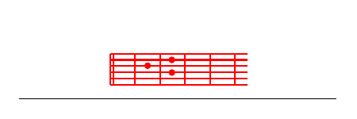

M.+K.EMwimbieni Mungu, lisifuni jina lake
mwimbieni Mungu, mwinyosheni D- *njia
arakibuye mawinEguni.
“Bwana” ni jina lake,
furD- *ahini mbele yake:
M.Baba wa yatima, Msaidizi wa wajane
ni MEungu.
Wafukara zD- *aidi
huwakalisha nyumEbani
huwD- *atoa wafungwa kwa sEhangwe.
M.+K.EAondoke Mungu,
adui zake watawanyike,
wenye haki wafurahi
na waimbe kwa shangwe!
*D-
